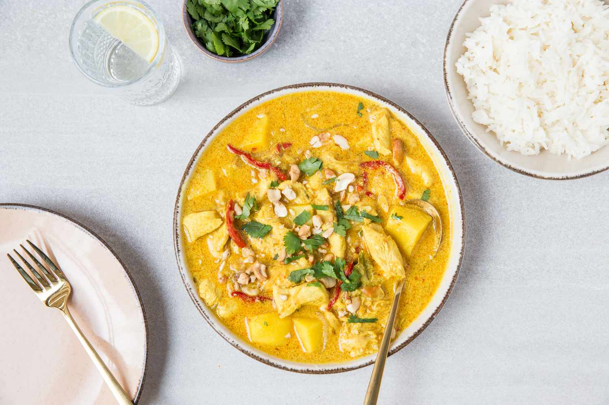

Thai Massaman Curry

Thai massaman curry is a rich, very flavorful yellow curry. Though the ingredient list is lengthy, it's a one-pot dish that's ready in about an hour, and it's fairly easy to make. This is a rather mild curry that is savory and slightly sweet and the flavor can be adjusted to perfectly suit your taste.
- 2 tablespoons vegetable oil
- 1/2 small onion, sliced
- 1 (2-inch) piece ginger, peeled and grated
- 4 to 5 cloves garlic, minced
- 1 Thai bird's eye chile, sliced, or 1/2 to 3/4 teaspoon chile flakes or cayenne pepper
- 1/2 cup chicken stock
- 1 stalk lemongrass, bottom 4 inches minced, or 2 to 3 tablespoons frozen or bottled prepared lemongrass
- 3 bay leaves
- 1 teaspoon turmeric
- 1/4 cup chopped unsalted dry-roasted cashews, plus a handful more to finish
- 1 teaspoon ground coriander
- 1 teaspoon whole cumin seed
- 1/8 teaspoon cardamom
- 1 teaspoon tamarind paste, or 1 tablespoon fresh lime juice
- 3/4 teaspoon shrimp paste
- 2 tablespoons fish sauce
- 1 tablespoon palm sugar, liquid or grated cake form, or brown sugar
- 1/2 to 1 pound chicken pieces, or chopped chicken breast/thigh
- 1 (14-ounce) can coconut milk, not lite
- 2 medium waxy potatoes, cut into 1-inch chunks
- 1 small red bell pepper, thinly sliced
- 1 medium tomato, halved and sliced 1/4-inch thick
- 1/4 cup chopped cilantro, for garnish
- Cooked jasmine rice, for serving